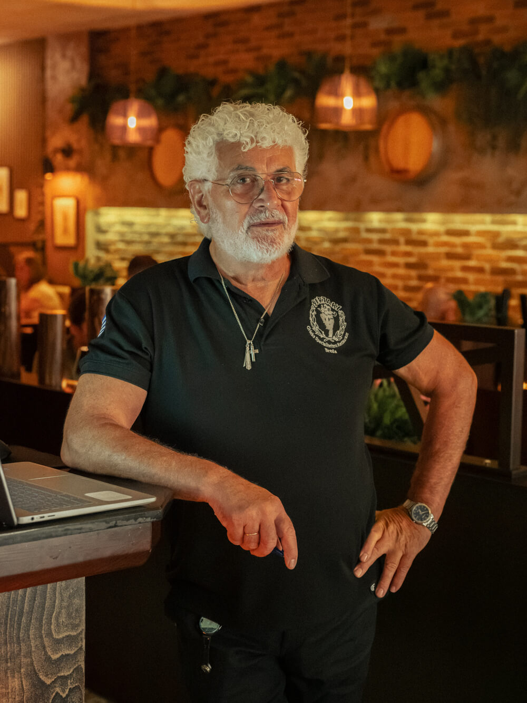

Een familiezaak, elke dag
De wens van de familie Poursanidis is om het restaurant te laten voortbestaan door de familie, die haar gasten, jong en oud, elke dag liefdevol wil laten genieten van de Griekse keuken.
60 jaar familierecept
Yiayia’s Family Recipe
Pastitsio: Griekse pasta uit de oven met gekruid rundergehakt, rijke tomatensaus, kaas, feta en romige bechamelsaus.
€ 23,50